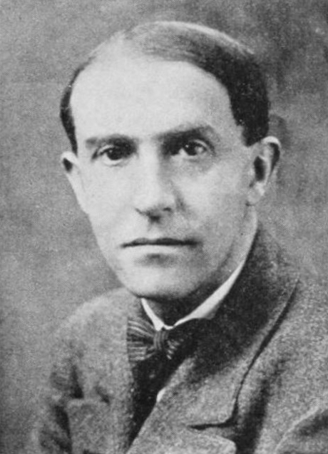
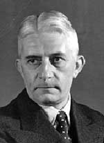

Psicología Gestalt
Max Wertheimer (1880-1943)

Fue un psicólogo alemán y uno de los máximos fundadores de la psicología de la Gestalt. Descubrió el fenómeno phi, una ilusión óptica clave para entender la percepción del movimiento. Trabajo en Alemania, pero emigró a EE. UU. en 1933 debido al nazismo. En Nueva York, enseñó en la School for Social Research y publicó Productive Thinking (1945), donde exploró el pensamiento creativo. Su trabajo influyó en la psicología cognitiva y el estudio de la percepción.
Kurt Koffka (1846-1941)
Fue un psicólogo alemán y cofundador de la psicología de la Gestalt. Aplicó a sus principios el desarrollo infantil y al aprendizaje. Su libro Principles of Gestalt Psychology (1935) difundió esta teoría en el mundo anglosajón. Emigró a EE. UU. debido al nazismo y trabajó como profesor hasta su muerte.
Wolfgang Köhler (1887-1967)
Fue un psicólogo alemán y cofundador de la psicología de la Gestalt. Estudió el aprendizaje en chimpancés y demostró el concepto de insight en su libro La mentalidad de los simios (1917). Dirigió el instituto de psicología en Berlín, pero emigró a EE. UU. en 1935 debido al nazismo. Su trabajo influyó en la percepción y la cognición.
La psicología Gestalt se originó en Alemania a principios del siglo XX y se presenta como una alternativa a la psicología wundtiana a partir de las críticas formuladas. Surgió en la Universidad de Fráncfort, donde sus tres máximos representantes realizaron sus primeras investigaciones. Aunque tuvo también su desarrollo en EE. UU. debido a un traslado forzoso de estos ante la persecución nazi.
La psicología de la Gestalt estudia cómo percibimos y organizamos la información. Su enfoque principal es la percepción, demostrando que interpretamos los estímulos como un todo estructurado en lugar de una suma de partes individuales. También analiza procesos como el aprendizaje y la resolución de problemas, destacando la importancia de la estructura y el contexto en la mente humana. Sus principios ayudan a entender cómo organizamos la información visual y mental para darle significado a nuestra realidad.
El principio básico de la psicología gestáltica consistía en una autoobservación que explicaba que el todo es más que solo la suma de sus partes, es decir, la percepción de un triángulo no es la percepción de tres líneas, sino que se configura global y formalmente dicha figura.
Un principio fundamental de esta psicología es el de la organización figura-fondo, en donde la parte más estructurada del componente se constituye en figura y la menos estructurada en fondo.
Según Wertheimer, son elementos que componen el estímulo perceptual global y determinan en gran parte su estructuración u organización:
- Semejanza: En igualdad de condiciones, los elementos similares del estímulo se perciben también como formando parte de un todo.
- Proximidad: Los estímulos más cercanos tienden a percibirse formando un todo.
- Continuidad: En igualdad de condiciones tenderemos a percibir como formando parte de una misma figura aquellos elementos que poseen continuidad.
- Inclusión: Los elementos de un estímulo perceptivo se agrupan a partir de su cercanía, dirección de movimiento común, etc.
La pregnancia o de buena figura hace referencia a la segregación de los todos perceptuales de los restantes componentes que existan en el campo estimular. Tal organización de una figura sobre un fondo depende de una serie de propiedades, así las estructuras perfectas, completas, simétricas y sencillas (buenas figuras) se destacan de las que poseen características contrarias (malas figuras).
Principio de cierre o clausura: Ocurre cuando una mala figura es percibida como buena ya que la mente completa figuras incompletas.
Se define como aquella que busca percibir los conflictos personales y la conducta social inadecuada como señales dolorosas creadas por polaridades o por dos elementos del proceso psicológico.
Volver al mapa